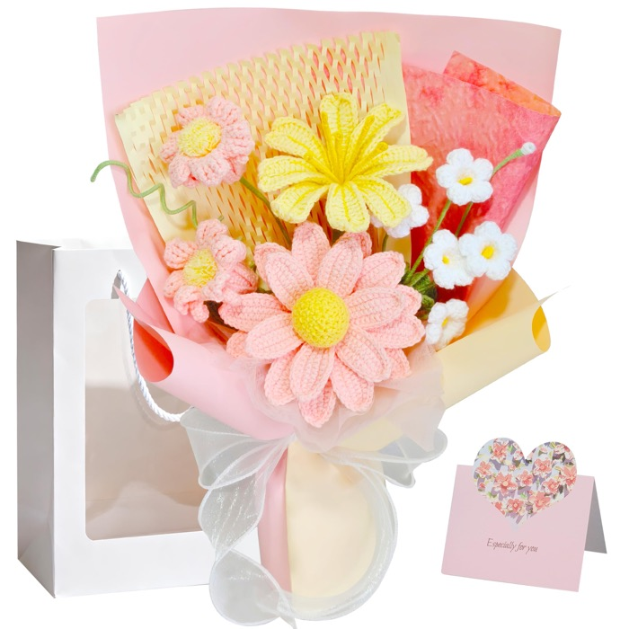

Crochet bouquet
Sun Daisy
A country garden, kept indoors.
A yellow sun daisy is paired with small white bellflowers for a country-garden feel. Every bloom is crocheted from soft cotton yarn and assembled by hand.
With about twelve crochet blooms, this is one of the fuller styles in the collection. It arrives ready to display or give, with a gift bag and greeting card included.
Price, shipping, and availability are shown on Amazon. ASIN B0FZHQR6CB.
- Blooms
- About 12 crochet blooms
- Materials
- Cotton yarn, crochet thread, paper wrap, ribbon
- Size
- Approx. 13.7 in H × 10.2 in W × 3.3 in D
- Weight
- Approx. 0.44 lb
- Included
- Finished bouquet, gift bag, greeting card
- Finish
- Hand-crocheted and fully assembled
Care
Spot clean gently with a damp cloth and let it air dry. No watering, sunlight, pruning, or cleanup is needed.
Handmade note
Each bouquet is handmade. Stitch detail, flower shape, and color may vary slightly from the photos.
Shipping & returns
Orders are completed on Amazon.com. Shipping options and returns are handled under Amazon's policies. Read more.
The idea
Fresh flowers fade. These are made to stay.
A bouquet should not ask for much. This one asks for nothing: no water, no trimming, no sunlight. It sits on a desk or shelf and keeps the shape it arrived in.
Hand-crocheted from soft cotton yarn, then wrapped and finished by hand. The result is a small, lasting object — closer to a textile keepsake than a flower arrangement.
More to keep